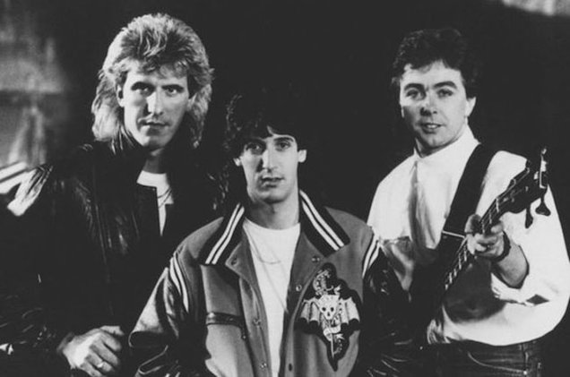
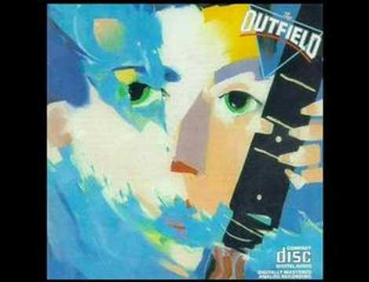

The Outfield se formó en la zona este de Londres bajo el nombre The Baseball Boys. El trío formado por el bajista/vocalista Tony G. Lewis, el guitarrista John Spinks y el baterista Alan Jackman. Tocaron alrededor de Londres y grabaron algunas maquetas iniciales, llamando la atención de Columbia Records, quienes firmaron con la banda en 1984
Comentario

The Outfield comenzó trabajando en su álbum de debut Play Deep, que se publicó finalmente en 1985, siendo un éxito instantáneo. El álbum llegó a ser triple platino y alcanzó el No. 9 en las listas de éxitos en América, y también llegó a ser un Top 10 con su Single "Your Love". Para promocionar su álbum la banda realizó una gira internacional, de teloneros para Journey y Starship.
Comentario